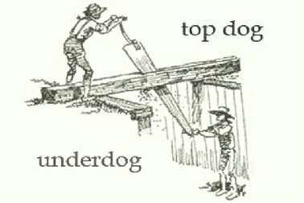

Борис Акунин
Мой календарь
Словом «андердог», «собака, которая снизу», по-английски называют человека, находящегося в паршивой, проигрышной ситуации - выражаясь по-церковнославянски, лузера.
Вообще-то это подмастерье пильщика-кораблестроителя - тот, кто пилил доски снизу, в яме, и на него сверху сыпались опилки.
Если вы оказались в подобной жизненной ситуации - в темной яме и вам на голову крошат всякую труху, учтите: наступил день, когда всё может измениться к лучшему. Он так официально и зовется - «Андердог дэй».
Во-первых, 16 декабря положено помогать тем, кому трудно и не повезло. Словом, делом, деньгами, моральной поддержкой. Посмотрите вокруг - таких людей много. Им очень нужна ваша помощь.
Во-вторых, если андердог - вы сами, перестаньте пилить эту чертову доску, стряхните с себя опилки, попробуйте выбраться из ямы. Лучше всего помогает тот, кто помогает себе сам.
Рецепт выхода из паршивой ситуации всегда один и тот же.
Не лить над самим собой слез жалости; стиснуть зубы; помнить, что с самого низа есть только одна дорога - вверх. И карабкаться.
Хороший день, очень хороший.